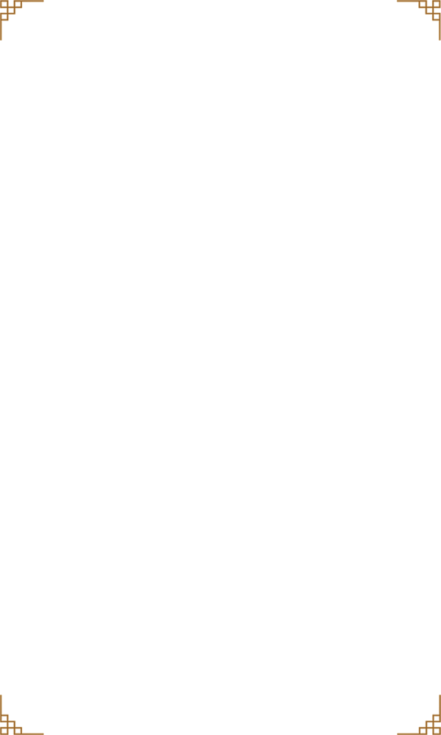

影视作品
《吴清源》是一部由田壮壮执导，张震领衔主演的剧情片，是围棋大师吴清源的首部传记影片，基于吴清源本人的传记体回忆录《中的精神》改编而成。影片描述了吴清源跌宕起伏、历经磨难与修炼归于平静的一生 。
 了解更多《棋魂》是日本《周刊少年JUMP》连载的以围棋为题材的少年漫画。作者是堀田由美，漫画由小畑健绘制，并由日本棋院的女棋士梅泽由香里担当监修。曾被改编为动画，由东京电视台、电通及Studio Pierrot共同制作，并于东京电视台系列在2001年至2003年播放。
了解更多《一盘没有下完的棋》是由中国导演段吉顺与日本导演佐藤纯弥联合执导，孙道临、三国连太郎主演的剧情片。影片讲述了况易山和松波两个围棋家庭三十年的沧桑变故。该片于1982年9月15日在中国大陆和日本首映。
了解更多《大国手》电影讲述的是清朝围棋大师范西屏和施襄夏谁是“天下第一”的故事。这两个人物，历史上被称为“棋仙”和“棋圣”，有围棋界的李白与杜甫之称，享誉中日韩，而以他们为代表的康熙、乾隆时代的棋艺水准，是整个围棋发展史上的一座高峰。
了解更多《围棋少年》是一部传奇剧情动画片，由马风清导演，孙晓松编剧，该剧由央视动画有限公司制作出品。故事以明朝末年为背景讲述了颇具有围棋天赋的少年——江流儿的成长历程。
了解更多《黑白英烈》是一部由谢鸣晓自编自导的剧情片，赵有亮、余晨光、沈晓海等人主演。本片取材于茨威格小说《象棋的故事》，讲述了被日军关押的博物馆馆长石兆光与同船的日本五段围棋手竹内秀夫对弈，而中日战争爆发，中国同胞与日本人在船上斗争，最后同归于尽的故事。
了解更多